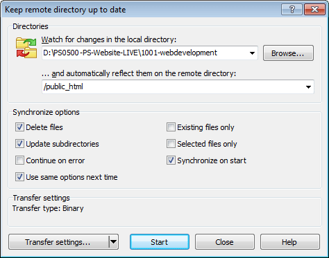

A file transfer protocol (ftp) client is basically a package that can be used to copy website files from your PC to the web host server that holds the online version of your website (the one everyone can see when the type the URL into a browser).
The ftp client I use is WinSCP (Windows secure copy protocol). You can get it here.
Figure 24.9 WinSCP download page
To get it just click the download button. This downloads a file called: winscp-5.13.8-setup.exe.
Run the file to install it.
The first screen is just an “accept the licence” screen click accept.
The second screen (Figure 24.10) is asking for the type of installation, go for typical. The third screen is to select the user interface, select commander. This shows the offline and online versions in side-by-side panels and it makes easier to move things between each.
Figure 24.10 WinSCP installation typeFigure 24.11 WinSCP user interface style
The final screen is the install button. Just click it.
Once installation is complete a final popup will be displayed, untick the get started and launch WinSCP boxes and click finish.
You will now have a WinSCP icon on your desk top:
24.2.1
Connecting WinSCP to the web host
In this section I’m going to show you how to connect WinSCP to the web host so you can upload the website and have it visible on the internet.
Enabling ftp at the web host
Before you start with WinSCP, you will probably have to logon to the web host website to allow ftp transfers to take place. This isn’t an absolute rule, but most web hosts disable ftp after a specified period. This is what mine looks like with Heart Internet. I’m logged in on the website and viewing the control panel:
Figure 24.12 Web host unlocking the ftp
I have to unlock the ftp before I can use it. There are two mechanisms available to me, I can either unlock it for a specific time ranging from 1 hour to 28 days (I tend to go for 4 hours) or I can unlock it indefinitely, but only for a specific IP address.
In either case, the ftp client will still need to supply the logon credentials (at the bottom) before anything can be uploaded to the website.
Let’s go for the 4 hour option. Tick the box and click unlock. I now get this:
Figure 24.13 Web host with unlocked ftp
I’m not saying that every web host does it this way, but it seems to be a fairly sensible approach.
Configuring WinSCP
Click the WinSCP icon to open it:
WinSCP opens its main window with a login popup:
Figure 24.14 WinSCP first use
Your exact ftp logon details will be provided by your web host provider. The host name is usually ftp.yourdomainname.
Let’s say I have the following information (I’m not showing the correct usernames and passwords, so don’t even try):
Protocol
FTP
Encryption
No encryption
FTP server
ftp.practicalseries.com
Username
PeterPettigrew
Password
fG594tp^xQ!
Table 24.2 Typical ftp logon information
The first thing to do is enter this information in the WinSCP logon popup:
Figure 24.15 WinSCP login dialogue
Leave it set to new site in the left pane (it is the only option at the moment and we will get to rename it later on).
Obviously enter the information for your own web host. In my case the file protocol needs to be FTP, there are various other options, but the most common is FTP, followed by SFTP (secure shell file transfer protocol), the second one has more security encryption added. The exact one depends on your web host.
The host name is the FTP server name (usually it is ftp. in front of your domain name); in my case it is ftp.practicalseries.com.
The port number is set automatically by WinSCP based on the protocol selected (21 for FTP, 22 for SFTP), I did not change this.
Finally enter your username and password.
Click save (I left the anonymous login unticked) to open the next dialogue window:
Figure 24.16 Save logon information
Enter a meaningful site name (this is just a name so that you can recognise the connection, it doesn’t have to be accurate).
I tick the save password box (even though it’s not recommended). If you leave it unticked, you will have to enter the password every time you logon.
That’s it click OK.
It will now try to connect WinSCP to your web host, a brief popup will appear showing the stages of the connection:
Figure 24.17 WinSCP connecting to the web host
The next time you start WinSCP, the logon popup will automatically appear, the connection you just named will be there (in my case PracticalSeries). Just select it in the left pane and click logon to activate it.
Finally, you will be connected and it will look like this:
Figure 24.18 WinSCP connected to the web server
Woohoo.
At the top (third row down, highlighted) you can see the connection tab, in my case it is PracticalSeries.
The two main explorer type windows are the important bit. The one on the left is looking at the documents directory on the local machine (this is the default start location for WinSCP). The window on the right is the web host, by default it is positioned at the root level of the website, this is the same as that shown in Figure 24.5 (WinSCP does not show the .bash files, these are considered system files).
The first thing to do is set the web host side to point to the correct location for our files. This is the public_html folder (this is where we are going to put our website).
Double click public_html in the right pane to open that folder. Now it gives:
Figure 24.19 WinSCP select the public folder
This now opens the public folder, it has the default index.html file in it. The folder name is indicated in a couple of places, you can see it in points 1 and 2 in the above figure.
If you want to go back up to the root level just click the icon.
The next thing to do is bookmark this location, it just makes it easier to get back here, click the folder with a green arrow (point 3 in the above figure):
Figure 24.20 WinSCP add public folder to the bookmark list
Click add and the bookmark will be added to the list. This can now be accessed at any time from the button.
Now we need to do the same with the local machine, we need to find the root directory of the website. On my machine it is located at:
D:/PS0500-PS-Website-LIVE/1001-webdevelopment
Use the dropdown (point 4 in Figure 24.19) to select a particular drive and then navigate to the correct folder. Mine looks like this:
Figure 24.21 WinSCP add local folder
On left hand side click the button and add the local directory to the bookmark list.
You can see in the left hand pane all the directories and files of the website that we have developed so far.
24.2.2
Uploading the website
To copy the website on the local machine to the web host, select all the files in the local directory, the left pane (click in the left pane and hit ctrl+a to select all the files) and click the upload button , this opens the upload dialogue:
Figure 24.22 WinSCP upload dialogue
Leave everything set as it is and click ok to start the transfer, this opens a progress window:
Figure 24.23 WinSCP upload progress
It takes a while to transfer the whole website (about 6 minutes 38 seconds to transfer 72 MB, it averages about 180 kB per second — I do have pretty good broadband).
At some point it will prompt you to overwrite the existing index.html file, it will also ask if you want to always overwrite in the future (I said yes to this).
At the end of this, the two folders will have the same files in them:
Figure 24.24 WinSCP all files uploaded to the web server
The moment of truth.
Open a web browser and type your domain name in to the address bar.
If you get something like Figure 24.25, it has probably worked.
Figure 24.25 The online website
24.2.3
Synchronising online and offline content
Rather than uploading the entire website each time you make a change, WinSCP has the facility to compare the online and offline folders and just copy any differences.
To do this, make sure the correct directories are visible in the two Windows (it should look like Figure 24.24) and then click the synchronise button . This will open the synchronise dialogue, set it as follows:
Obviously, the local directory will be whatever you have selected on your machine.
I tend to synch from the local machine to the remote web host (not the other way) hence the direction/target directory is set to remote.
I also set it to delete files (if I’ve removed a file in the local directory, I want it to be deleted from the remote too).
I also select the use same options next time. Click ok.
This will start a compare function:
Figure 24.27 WinSCP comparing files
The comparison takes a while (depends on the size of the website, in my case about 1 minute 30 seconds). After which it will upload any changed files.
24.2.4
Synchronising online and offline content
There is also an option for keeping the two folders synchronised (keep remote directory up to date, )
This has a similar set of options:

Figure 24.28 WinSCP keep remote directory up to date
This will carry out the same comparison as the synchronise, but will then continue to monitor the two directories constantly up dating any changes until the stop button is pressed.


{kind=link}
{kind=link}
{kind=link}
{kind=link}
{kind=link}
{kind=link}
{kind=link}
{kind=link}
{kind=link}
{kind=link}
{kind=link}
{kind=link}
{kind=link}
{kind=link}
{kind=link}
{kind=link}
{kind=link}
{kind=link}